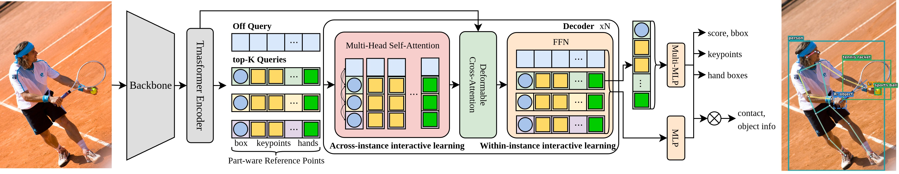

Single-Query Person-Centric Bimanual
Hand-Object Interaction Detection
Abstract
Understanding which person uses which hand to interact with which object is essential for fine-grained activity understanding and human-centric scene parsing. Existing large-scale hand-object interaction approaches are predominantly hand-centric: they detect individual hands and contacted objects without explicitly coupling the left and right hands under a shared human instance, which may lead to ambiguous ownership in multi-person scenes.
We introduce a person-centric structured prediction framework in which a single query jointly represents one instance and, for person queries, predicts the human bounding box, body pose, left/right hand boxes, and bi-manual interaction targets. Our part-aware deformable attention assigns references to the human body, both hands, and body joints, enabling global and local reasoning without additional task-specific queries. Interaction inference is formulated as hand-to-query target selection over detected entities and a learnable off token, directly recovering the target box and semantic class.
To support this task, we construct a COCO-based dataset with human boxes, body keypoints, left/right hand annotations, contact states, interacting-object boxes, and semantic classes. We also introduce structured metrics that progressively evaluate hand state, interaction-target localization, and complete person-hand-object tuple correctness. Experiments demonstrate accurate person-centric interaction reasoning while retaining a query-efficient design.
Method Overview

Our model follows an RT-DETR-style encoder-decoder architecture. Each query predicts an instance category and bounding box, while person queries additionally predict body keypoints, left/right hand boxes, and hand-specific interaction targets.
Part-aware deformable attention assigns decoder heads to reference regions corresponding to the instance box, both hands, and body joints. A hand-to-query relation module then selects an interaction target from the detected entity set or a learnable off token.
Person-Centric Bimanual Interaction Dataset

Our COCO-based dataset contains 64,111 images, 262,351 person instances, and 102,821 hand-contact labels. It jointly provides human bounding boxes, body keypoints, left/right hand boxes, contact states, interacting-object boxes, and semantic object classes.
Original images are not redistributed and should be downloaded from the official COCO dataset. We will release COCO-compatible annotation JSON files, the annotation schema, example files, and visualization utilities.
Qualitative Results

Predictions include human boxes, body pose, left/right hand boxes, and hand-specific interaction targets.
Poster
BibTeX
@inproceedings{kim2026singlequery,
title = {Single-Query Person-Centric Bimanual Hand-Object Interaction Detection},
author = {Jonghyun Kim and Junho Roh and Yubin Yoon and Jaechul Kim and Jungho Lee and Hyotae Lee and Jongkuk Park and Taehwan Hwang},
booktitle = {European Conference on Computer Vision},
year = {2026}
}